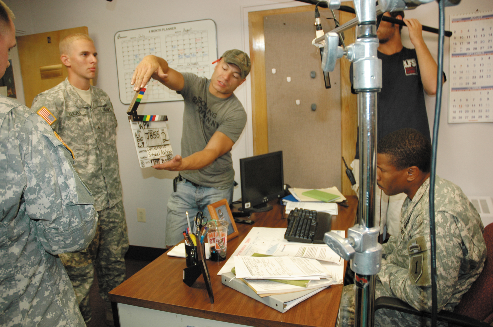
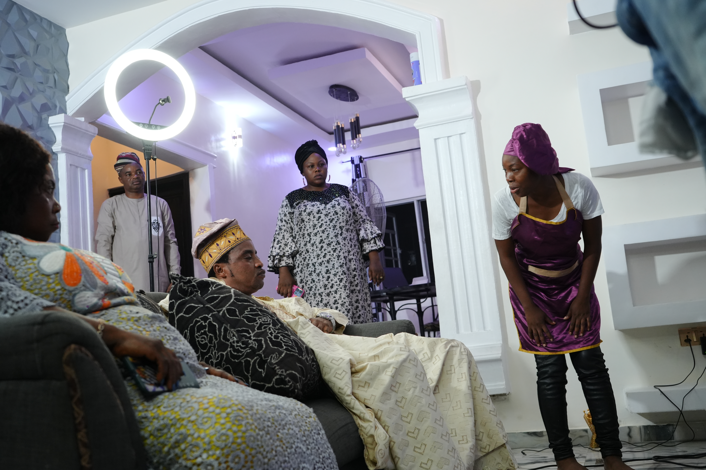

L'ASSISTANT
RÉALISATEUR
La voix qui fait tourner le plateau — celui qui protège le temps du réalisateur et la sécurité de tout le monde.
Le réalisateur pense au film. L'assistant réalisateur pense à l'heure.
Le 1er AD est l'interface entre le réalisateur et toute l'équipe. Pendant que le réalisateur jongle avec le placement caméra et le jeu des acteurs, quelqu'un doit répondre à mille questions logistiques — c'est lui.
⏱️ Ce qu'il protège
Le planning. Chaque minute perdue coûte de l'argent réel — il ajuste en temps réel pour que la journée tienne.
🛡️ Ce qu'il garantit
La sécurité du plateau. C'est sa responsabilité la plus lourde, avant même le respect du planning.
📢 Ce qu'il incarne
La voix du plateau — les annonces, le rythme, l'ordre. Un plateau calme est presque toujours le signe d'un bon AD.
Neuf chapitres, du dépouillement au dernier « coupez ».
Qui est le 1er AD
Le 1er AD dirige une équipe (2e AD, 3e AD, assistants de plateau) et travaille en lien direct avec le réalisateur, le directeur de production et tous les chefs de poste. C'est un poste d'autorité opérationnelle, pas de hiérarchie créative.
| Poste | Périmètre |
|---|---|
| 1er AD | Fait tourner le plateau, tient le planning, garant de la sécurité |
| 2e AD | Prépare les feuilles de service, gère les comédiens et la figuration |
| 3e AD | Placement de figuration, contrôle des accès, relais sur le plateau |
Qui répond à quoi ?
- Liste 6 questions posées sur un plateau (« où est le café ? », « quelle est la prochaine valeur de plan ? », « le figurant peut-il partir ? »).
- Pour chacune, indique si elle va au réalisateur, au 1er AD, ou ailleurs.
Le dépouillement du scénario
Tout commence en préparation : le 1er AD dépouille le scénario scène par scène pour identifier ce que chaque plan exigera — maquillage, steadicam, costumes, cascadeurs, effets spéciaux.
Liste les besoins techniques
- Prends une scène courte avec 2 personnages et un effet particulier (pluie, cascade, animal).
- Liste tout ce qui devra être prêt avant le premier plan.
Le plan de travail
À partir de la liste de plans établie avec le réalisateur et la DP, l'AD découpe l'ordre des plans et estime la durée de chacun — c'est cette estimation qui construit tout le planning de tournage.
Chronomètre mentalement une scène
- Pour une scène de dialogue en 5 plans, estime le temps nécessaire pour chaque installation et chaque prise.
- Additionne — la scène tient-elle dans une demi-journée ?
La feuille de service
Le soir précédent, l'AD vérifie les plans du lendemain, transmet les ajustements au 2e AD ou au chargé de production, et valide la feuille de service avant envoi. Sur les petites équipes, il la rédige lui-même.
| Élément | Pourquoi c'est critique |
|---|---|
| Heures de convocation | Une erreur = toute l'équipe décalée |
| Découpage du planning | Numéros de scènes, métrage en pages, comédiens concernés |
| Notes spéciales | Cascades, effets, plateau ouvert ou fermé |
| Heure du repas | Traditionnellement six heures après la convocation générale |
Repère l'erreur
- Imagine une feuille de service annonçant 8 pages à tourner en une journée avec 3 changements de lieu.
- Écris la remarque que tu ferais avant de valider.
Les annonces de plateau
Les annonces ne sont pas du folklore — ce sont des instructions de sécurité et de synchronisation. Chacune déclenche une action précise dans plusieurs départements simultanément.
Apprends l'enchaînement par cœur
- Récite la séquence complète à voix haute, dans l'ordre, sans regarder.
- Pour chaque annonce, nomme quel département réagit.
Tenir le planning en direct

Une journée de tournage ne se déroule jamais comme prévu. L'AD ajuste en permanence — réordonner des plans, réduire la couverture, décaler le repas — sans jamais laisser l'équipe deviner qu'on est en retard.
Prends une décision sous pression
- Il est 15h, tu as une heure de retard et 4 plans restants.
- Propose 3 arbitrages possibles, et dis lequel tu choisis et pourquoi.
La sécurité du plateau

Cascades, armes factices, véhicules, hauteurs, météo — la sécurité passe avant le plan, toujours. Un AD qui accepte un risque pour gagner vingt minutes fait le mauvais métier.
Prépare une séquence à risque
- Pour une scène impliquant un véhicule en mouvement, rédige le briefing sécurité que tu ferais à l'équipe.
Gérer les personnes
Un AD passe sa journée à demander des choses à des gens fatigués. L'autorité ne vient pas du volume de la voix — elle vient de la clarté, de la constance, et du fait que l'équipe sait qu'il protège aussi ses intérêts.
- Un réalisateur qui ne fait pas de liste de plans : poser des questions concrètes (« tu penses à un large puis deux amorces ? ») plutôt que d'insister.
- Un comédien en retard, un département bloqué, un conflit d'ego — l'AD absorbe, redirige, ne rapporte que ce qui doit remonter.
- Ne jamais humilier quelqu'un devant l'équipe. Jamais.
Formule une demande difficile
- Un chef de poste dépasse largement son temps d'installation et s'agace quand on le presse.
- Écris la phrase exacte que tu lui dirais.
Évoluer depuis ce poste
Le 1er AD connaît le fonctionnement de tous les départements — c'est pourquoi ce poste mène naturellement à la réalisation, à la direction de production, ou à une carrière entière d'AD très demandé.
Identifie ce que ce poste t'apprend
- Liste 3 compétences acquises comme AD qui serviraient directement à un réalisateur.
Trois façons de tenir un plateau.
Tout est prévu, chronométré, annoncé. L'équipe sait toujours ce qui vient — efficace, parfois rigide face à l'imprévu créatif.
Tient le planning par la confiance plutôt que par la contrainte. Excellent sur les longs tournages, plus lent à imposer une décision urgente.
Arbitre systématiquement en faveur de la sécurité et du confort de l'équipe, quitte à perdre un plan. C'est le seul réflexe non négociable des trois.
Bibliographie et ressources.
Le petit quiz de fin de parcours.
NIVEAU 1 — BASES1. Qui prononce «Action» sur un plateau ?
NIVEAU 1 — BASES2. L'assistant realisateur (AD) est principalement responsable de :
NIVEAU 2 — APPLICATION3. Quelle est la responsabilite qui passe avant le planning ?
NIVEAU 2 — APPLICATION4. Pourquoi l'AD n'est-il pas «un second realisateur» ?
NIVEAU 3 — ANALYSE5. A partir de quoi le 1er AD construit-il le plan de travail ?
NIVEAU 3 — ANALYSE6. Traditionnellement, combien de temps apres la convocation generale le repas a-t-il lieu ?
NIVEAU 4 — EXPERT7. Pourquoi le depouillement de l'AD differe-t-il de celui du directeur de production, meme sur le meme scenario ?
NIVEAU 4 — EXPERT8. Pourquoi un AD qui accepterait un risque de securite pour gagner 20 minutes ferait-il «le mauvais metier» ?
NIVEAU 5 — MAÎTRISE9. Pourquoi la validation de la feuille de service et la tenue du planning en temps reel relevent-elles de la meme vigilance ?
NIVEAU 5 — MAÎTRISE10. En quoi la sequence d'annonces et la regle «securite avant planning» relevent-elles de la meme philosophie ?